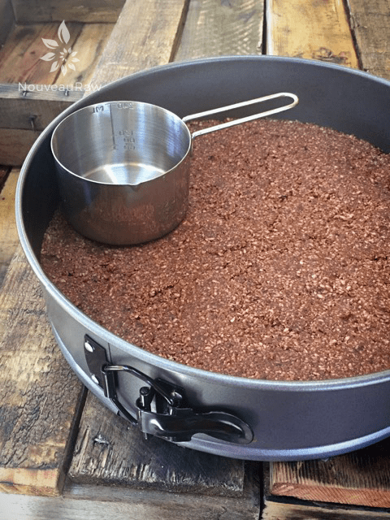
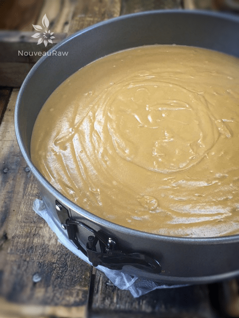
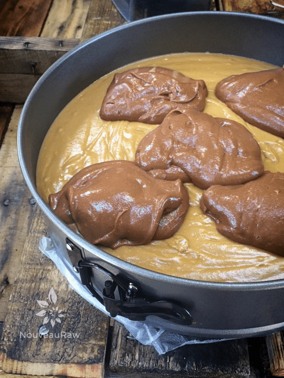
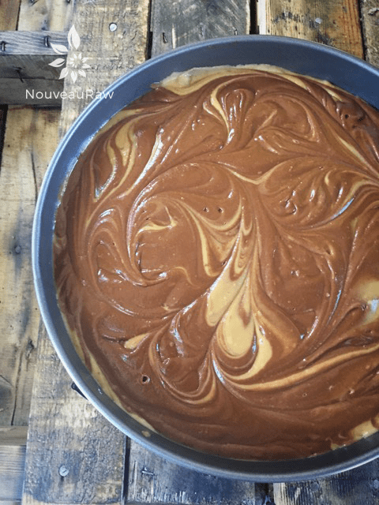
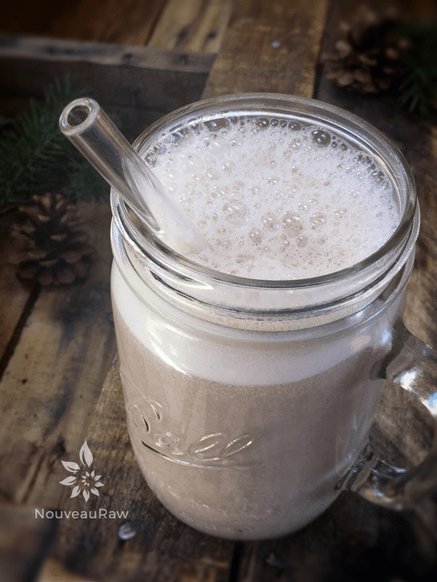

Deluxe Apricot and Chocolate Swirl Cheesecake
~ raw, vegan, gluten-free, nut-free ~
Today’s recipe was presented to me as a challenge. I received an email asking if I could create an apricot and chocolate cheesecake that was nut-free. It came at the perfect time because we’re going to be celebrating my husband’s birthday with a few friends and I thought I could test share this wonderful dessert with them. :)
I also welcomed this challenge because I have been working more and more towards creating recipes without nuts. Nut allergies are becoming the new gluten! Kind of scary actually. But even I have to watch my intake of nuts so the timing was perfect.
When creating raw cheesecake desserts there are two main things to focus on, texture and firmness. You want a creamy mouth-feel, and you want the cheesecake to stand up on its own. So, with those two factors in mind, I got busy. One other small issue was that fresh apricots are not season this time of year so I had to rely on dried apricots. I used Turkish apricots and made sure that they didn’t have any ingredients other than apricot in them! The trick was to soak them for a few hours to really soften them up so I could create a smooth puree.
The flavor of an apricot manages to uniquely combine peach-like-sweet with a tang. They are high in beta-carotene and lycopene and are rich in vitamin A, vitamin C, and fiber. A great “side effect” to my overall recipe. Pairing apricot with chocolate is about as incredible as it comes. But then, I guess in reality, what doesn’t pair well with chocolate!? Books have been written on the health benefits of raw cacao (chocolate) so I won’t even begin to try to share all of it with you but did you know that cacao is the highest whole food source of magnesium, which also happens to be the most deficient mineral in the diet of modern cultures? Magnesium relaxes muscles, improves peristalsis in the bowels and relaxes the heart and cardiovascular system.
The third main ingredient that I used in this recipe is coconut and I used it in many forms. Coconut oil, Young Thai Coconut flesh, and coconut flakes! You can read here for an inside snippet on the health properties to coconut if you wish. The coconut flesh helps give a creamy texture to this cake and the oil, which hardens at 76 degrees or lower, gives us that firmness when chilled.
So, last night we shared this cheesecake with many of our friends and needless to say, no leftovers came home with us. That is always a good sign. As I watched people enjoy the cheesecake, savoring each bit, I felt good knowing that they were eating something that was so good for them and the sneaky part is, is that they weren’t even aware of it. As I shared with one gal the ingredient list, she sat back in awe. She turned to me and said, “You mean I don’t have to feel guilty for eating this?” All though that caused a chuckle to rise in my throat it also made me aware that we should never have to feel guilty about the foods we eat. That little comment once again confirmed that I am on the right track of creating and sharing these recipes with others… hoping one day they will take over the world!!! Healthy food that is! hehe
Yields 9″ Springform pan
Crust Ingredients:
- 3 cups (248 g) organic coconut, unsweetened, shredded
- 1/2 cup (62 g) ground flax
- 1/4 cup (20g) raw cacao powder
- 2 tsp (2 g) ground cinnamon
- 1/4 tsp (2 g) Himalayan pink salt
- 8 (90 g) moist Medjool dates, pitted
- 3 Tbsp (42 g) coconut oil
- 3 Tbsp (64 g) raw agave nectar
- 2 Tbsp (30 g) water
Filling Ingredients:
- 2 cups (260 g) dried apricots, rehydrated
- 2 cups hot water (soaking water for apricots )
- 2 cups (316g) Young Thai Coconut meat
- 1/2 cup (168 g) raw agave nectar
- 3 Tbsp (60 g ) lemon juice
- 1/4 tsp (2 g) Himalayan pink salt
- 1 1/4 cups (254 g) raw coconut oil, melted
- 3 Tbsp (20 g ) lecithin powder
- 5 Tbsp (1 oz) cacao powder
- 1 Tbsp vanilla
Preparation:
Crust:
- Prepare the Springform pan. Wrap the base with plastic wrap and snap the base into the ring. This will make it easier to remove when for slicing and serving.
- In the food processor, fitted the “S” blade combine the shredded coconut, ground flax, cacao, cinnamon, and salt. Process to mix everything to and to break down the coconut.
- Add the dates, oil, sweetener, and water. Pulse until the batter sticks together.
- If the batter is too crumbly, add another tablespoon of water. Sometimes the Medjool dates are moist enough to where you don’t need to add more water.
- Evenly sprinkle the crust batter over the base of the pan.
- Firmly and evenly press the crust down. I used a large spatula or straight edge measuring cup to get really clean edges. See photo below.
- Place the crust in the freezer while you create the filling.
Filling:
- ** Volume Alert… this filling will create 6 1/2 cups of batter so make sure your blender carafe can handle that before starting.
- Re-hydrate the dried apricots in 2 cups of hot water for 1+ hours. The softer they are, the easier they will blend to a creamy texture.
- After the apricots are done soaking, drain and discard the soak water. Place then in a high-powered blender along with the soak water. Blend until creamy.
- Add the coconut meat, sweetener, lemon juice, and salt. Blend until creamy.
- Alternatively, you can use 2 cups of cashews that have been soaked for 2+ hours instead of the coconut meat.
- Drizzle in the melted coconut oil while the blender is running. Make sure you have a vortex happening so it will draw the oil in which makes for an even mixture. Once that is incorporated, add the lecithin and blend until combined.
- Pour all but 2 cups of the batter into the Springform pan. Tap the pan on the counter top to bring any bubbles to the surface. Do this on a towel to save your ears.
- Add the cacao and vanilla to the 2 remaining cups of batter that are still in the blender. Process until well mixed.
- Pour 4-5 large puddles of the chocolate batter around the pan, on top of the other batter.
- Drag a skewer stick around and through the batter, drawing the colors into each other. Be careful that you don’t dig into deep and disrupt the crust.
- Place in the freezer uncovered for 4-6 hours to firm up.
- Once thoroughly chilled, then cover to protect if from freezer burn and odors. If you covered it right away, condensation will build up on the covering and drip on the cheesecake, leaving spots.
- To remove from the pan use a warm knife (run it under the hot tap for a second) and run it around the inside of the loosened band.
- This cheesecake will last for 4 days in the fridge and up to 3 months in the freezer.
- Keep the cheesecake leftovers in the fridge or freezer.
- For decorations, if you feel the need… drizzle chocolate ganache over it and/or place edible flowers on top.
- This cheesecake can be served frozen or chilled. I ran a test on one slice and it stayed firm well into the 4th hour of being on the table, of course, half of it was missing by then. (haha) The room temperature was roughly 68 (F) or 20 (c) (for my foreign friends).

Tricks for making the crust: First wrap the base with plastic wrap. This helps when transferring the pie to a plate or cake stand. Next, I used a measuring cup to press the crust down firmly and evenly.

Next you will pour in the apricot filling layer, followed by spoonfuls of the chocolate filling.

Now take a skewer stick and drag it through the two layers to create a swirl effect.

To clean the blender, pour some nut milk into the blender and blend for about 20 seconds. The end result… a scrumptious, rewarding glass of raw chocolate milk! Go ahead… you deserve it.

© AmieSue.com